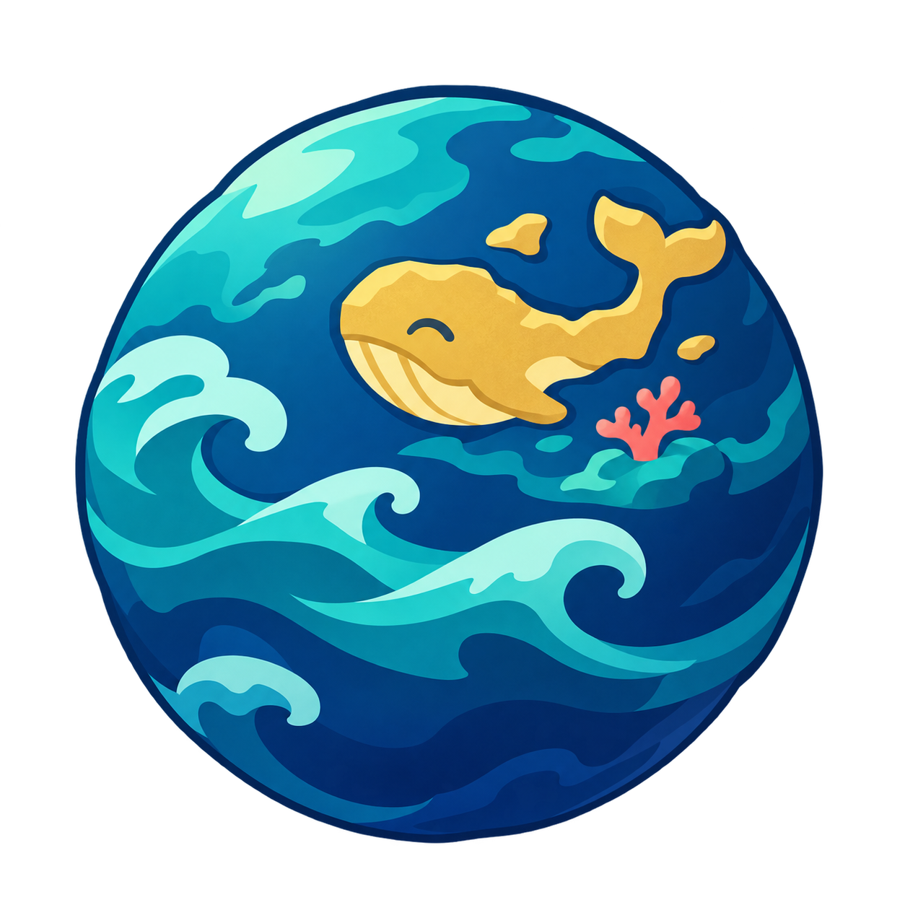

ORION UNIVERSE KINGDOM / FIRST VOYAGE
고래밥별바다 탐험대
작은 한 입에서 시작된,
아주 커다란 우주.
익숙한 고래밥 친구들과 낯선 별바다로.
나만의 함선을 키우고, 탐험의 끝에서 새로운 즐거움을 발견하세요.

01 / THE ADVENTURE
바다를 넘어,
별바다로.
익숙한 바다 친구들이
새로운 우주의 탐험가가 됩니다.
과자별에서 도착한 작은 신호. 고래밥 탐험대는 그 신호를 따라 미지의 항로를 펼칩니다. 선장이 되어 다음 목적지를 선택하고, 탐험에서 모은 재료로 함선을 성장시켜 보세요.
- GENRE
- 캐주얼 탐험
- PLATFORM
- 모바일
- WORLD
- 오리온 유니버스
기획 프리뷰 · 아래 구역과 함선, 보상은 게임 콘셉트를 소개하는 예시이며 개발 과정에서 달라질 수 있습니다.
YOUR MISSION
탐험대 임무
항해하고, 성장하고, 즐거움을 가져오세요.
- 01 ↗
항로를 찾기
별 지도를 살피고 다음 과자별로 향하는 안전한 길을 선택하세요.
탐험 구역 보기 → - 02 ↑
함선 업그레이드
별 조각과 재료를 사용해 탐험 함선을 강화하고 더 먼 별바다로 나아가세요.
함선 살펴보기 → - 03 ✦
고래밥 보상을 받으세요
탐험 임무를 완수하고 고래밥 보상을 만나보세요. 자세한 보상 종류와 획득 조건은 추후 안내됩니다.
보상 알아보기 →
02 / DESTINATIONS
다음 목적지는
어디인가요?
세 가지 항로를 눌러
별바다의 풍경을 미리 만나보세요.
THE BEGINNING
모든 모험의
출발점.
따뜻한 과자 부스러기가 떠다니는 작은 우주 항구. 함선의 기본 조작을 익히고 첫 항해를 준비하는 곳입니다.
- 탐험 테마
- 첫 항해 · 기본 재료 수집
- 추천 준비
- 함선 점검, 탐험 지도
03 / YOUR SHIP, YOUR WAY
작은 함선에서
시작하는 큰 모험.
함선이 성장하면 항해도 달라집니다.
단계를 선택해 변화하는 모습을 확인하세요.
SCOUT CLASS / 정찰형
UPGRADE PREVIEW
첫 항해를 위한 준비
가볍고 작은 선체에 탐험의 필수 장비를 담았습니다. 가까운 구역을 누비며 성장에 필요한 재료를 모으세요.
소개용 미리보기입니다. 실제 게임 진행이나 재화 사용은 발생하지 않습니다.
04 / LITTLE WINS, BIG JOY
고래밥 보상을
받으세요.
항로 하나를 완성할 때마다 새로운 발견이 쌓입니다. 탐험의 성취가 고래밥의 즐거움으로 이어지는 보상 경험을 준비하고 있습니다.
- 01
탐험 임무 완료
목적지에 도착하고 주어진 탐험 목표를 달성하세요.
- 02
탐험 기록 확인
완료한 임무와 획득 조건을 확인하세요.
- 03
보상 만나기
보상 종류, 지급 방식과 실물 교환 여부는 추후 공개됩니다.
BEFORE YOU BOARD
출발 전,
궁금한 이야기.
어떤 게임인가요?
고래밥과 우주를 결합한 캐주얼 탐험 게임 콘셉트입니다. 항로 탐험, 함선 성장, 고래밥 보상으로 이어지는 경험을 소개합니다.
지금 바로 플레이할 수 있나요?
현재 페이지는 게임 소개와 기획 프리뷰입니다. 플레이 가능한 버전과 출시 일정은 아직 안내되지 않았습니다.
함선 업그레이드 버튼은 무엇인가요?
성장 단계에 따른 함선의 모습과 탐험 능력을 살펴보는 소개용 미리보기입니다. 계정이나 실제 게임 데이터에는 영향을 주지 않습니다.
고래밥 실물 보상을 받을 수 있나요?
보상은 기획 중이며 실물 교환 여부, 지급 조건과 참여 방법은 확정 후 안내될 예정입니다. 이 페이지에서 보상을 신청하거나 받을 수는 없습니다.
THE UNIVERSE TASTES DIFFERENT.